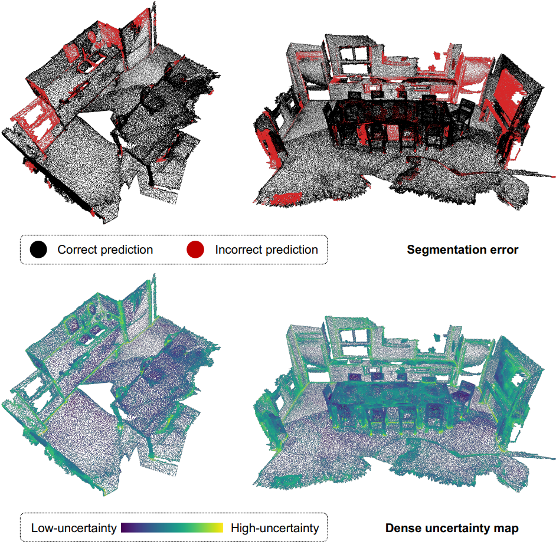
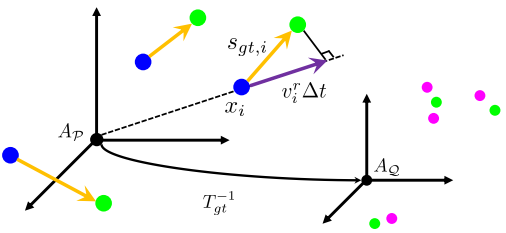
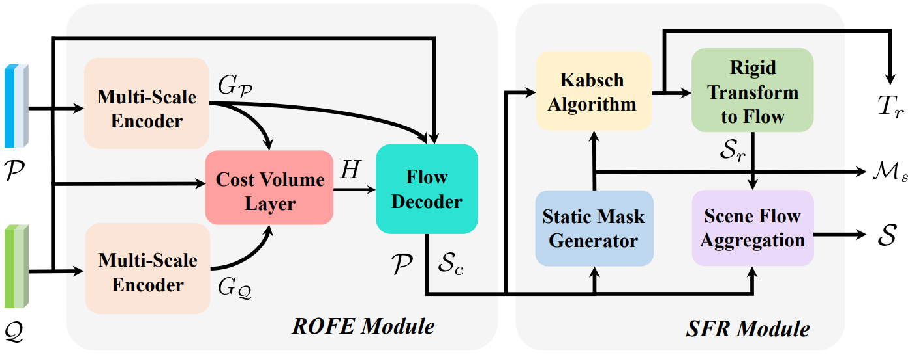
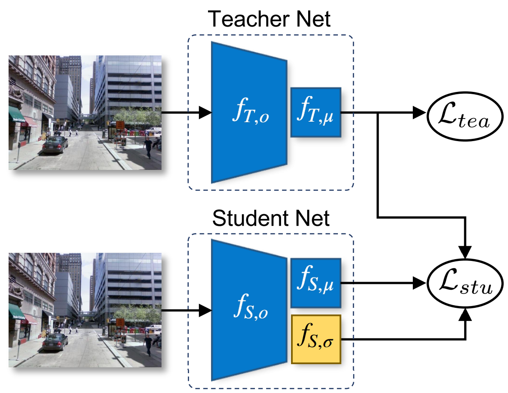
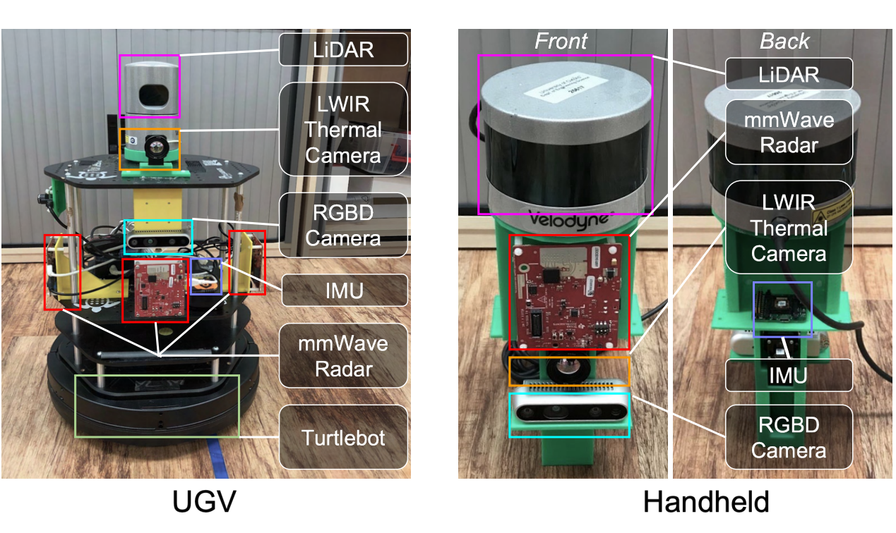
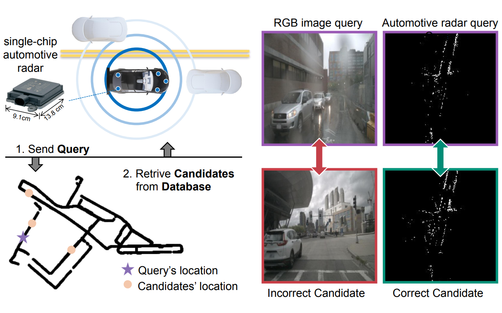

 Exploring Cross-Point Embeddings for 3D Dense Uncertainty Estimation Kaiwen Cai, Chris Xiaoxuan Lu, and Xiaowei Huang CORR 2022 | ARXIV | VIDEO |
  Self-Supervised Scene Flow Estimation with 4-D Automotive Radar Fangqiang Ding, Zhijun Pan, Yimin Deng, Jianning Deng and Chris Xiaoxuan Lu IEEE RA-L/IROS'22 | PDF | CODE | VIDEO | PAGE |
 STUN: Self-Teaching Uncertainty Estimation for Place Recognition Kaiwen Cai, Chris Xiaoxuan Lu, and Xiaowei Huang IROS'22 | PDF | CODE |
 OdomBeyondVision: An Indoor Multi-modal Multi-platform Odometry Dataset Beyond the Visible Spectrum Peize Li, Kaiwen Cai, Muhamad Risqi U. Saputra, Zhuangzhuang Dai, and Chris Xiaoxuan Lu IROS'22 | PDF | CODE |
 AutoPlace: Robust Place Recognition with Single-chip Automotive Radar Kaiwen Cai, Bing Wamg, and Chris Xiaoxuan Lu ICRA'22 | PDF | CODE | VIDEO | PAGE |